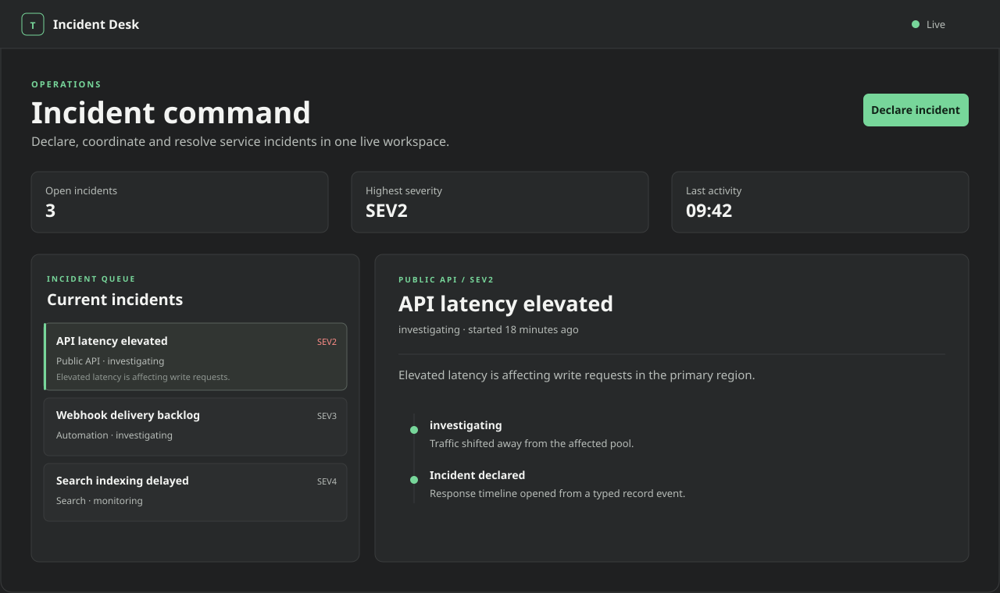

Authentication included
Application users, rotating refresh sessions, short-lived access tokens, service accounts and personal tokens have distinct authority boundaries.
Trestle is a self-hosted backend platform for typed collections, application authentication, access rules, files, realtime events and durable automation - one Go service, SQLite first, and a language-neutral HTTP API.
Application users, rotating refresh sessions, short-lived access tokens, service accounts and personal tokens have distinct authority boundaries.
Typed collections, transactional records, filters, pagination and access rules keep persistence understandable without reducing it to a toy API.
The Nift-built dashboard, durable jobs, webhooks, backups and recovery tools ship with the Go service.
HTTP, JSON, OpenAPI and Server-Sent Events are the public boundary. Browser apps can authenticate as users; trusted services use scoped credentials; automation consumes committed events.
Explore example stacks →Incident Desk is a separate, runnable product built on the same public APIs available to your application. It combines user authentication, rules, typed records, live events and record-bound files without importing Trestle internals.

CP00-CP23 are complete, including the full retained hardening matrix and six-platform packaging. No stable version has been published yet.